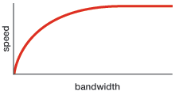
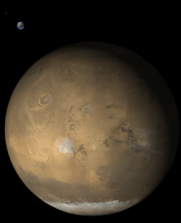
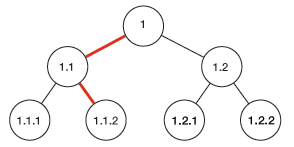

This article isn’t some science-fiction idea about having messages beamed across space and time to distant colonies in different quadrants, but more about everyday issues dealing with communications within our own solar system.
We probably remember from school that it takes 8.5 minutes for the sun’s light to reach Earth. We are 1 AU (Astronomical Unit), 149.60×106 km from the nearest star, our Sun. We also know that the fastest possible speed is the speed of light. There is no faster way to get information to and from two points than the speed of light. 299,792,458 meters per second is our upper bound, which sounds pretty fast, and it is, but over distances within our own solar system we’ll quickly see things fall apart.
Bandwidth
Back in 01996, I can remember getting my first 14.4 baud modem. This was 14.4 kilobits/second and was quickly replaced by the 28.8, then 56k! At that time, the bottleneck when transferring data was the bandwidth. You couldn’t get the data down fast enough due to the limited through-put. Loading a 70kb image on a 56K modem would take around 10 seconds, these days no one blinks an eye at a multi-megabyte flash animation, because the amount of information we can shove down the same pipe is much larger than those 14.4 days.
There is a curve we can plot which is speed at which a page loads compared to bandwidth. At low-bandwidth connections, the page load time is determined by how fast we can download it. At high-bandwidth connections the load time is limited by the latency.
When we were all on 14.4 modems, it didn’t matter if the latency of fetching data took 250 or 300 milliseconds, you were always hindered by the bandwidth. As we are getting connections with larger and larger through-put, the most noticeable limitation is becoming the latency and we know that the fastest possible speed is constant, the speed of light.
Talking to the Moon
Our Moon is approximately 384,403 kilometers away. That’s 1.25 light-seconds. This means that any message that we send to the moon takes about 1.25 seconds to get there, then another 1.25 seconds for someone to reply. This means an overall delay of about 2.5 seconds between messages in communications. This would be a pretty annoying and boring conversation if all the awkward pauses lasted 2.5 seconds and were after each sentence!
This is because we cannot exceed the speed light. No matter how much bandwidth we put up between the Earth and the Moon, there is no way to overcome the latency factor. This is what is going to limit intra- and interstellar communications. So how do we get around this?
Mission to Mars
In early 02004, then President Bush of the USA made the first steps to create a Mars mission by getting back to the Moon by 02020. Let’s imagine that we do send Astronauts to Mars to explore the surface. Mars is 1.52 AU from the Sun, so on a good year, the distance between Earth and Mars could be as low as .52 AU or about 4 light minutes. On a bad year it would be around 2.5 AU (or more since we can’ t send messages directly through the Sun) which is at least 20 light minutes.
On the Moon a 2.5 second round-trip delay is annoying, but on Mars a 40 minute round-trip delay is impractical. NASA designed the most recent missions to Mars, the Mars Exploration Rovers, to work as autonomously as possible. The rovers send back information about their environment, then at night, the NASA team decided where to go and what to examine and sends the information back to the rovers. The next day, the rovers execute the commands and the cycle continues. Instead of synchronous communication between Earth and Mars, it is a massive batch of commands once a day.
With Astronauts on the surface of Mars, they would be able to make more independent decisions about what to examine and where to explore. NASA will certainly want to keep tabs on the health and well-being of the crew, but the relay time back to Earth is fixed and could be as slow as 20+ minutes!
Can we design a better way?
We are observing on an almost daily basis new ways to push more information through the same pipes at ever increasing bandwidth. As with all technology, bandwidth seems to follow Moore’s law and becoming more abundant and cheaper every 18 months. Even if we can’t exceed the speed of light, can we do more with the ever increasing bandwidth?
One aspect to the explosive growth of computers is the mantra of “be wasteful”. The early computers were command line devices and were very frugal in their memory foot-print, disk space and features. They used very little screen real estate and a few one-colour pixels to light-up the display. The physical hardware to achieve this were expensive and fragile. Innovating, forward thinking people said, “be wasteful”, today the capacitors to draw those pixels might be expensive, but in a short time they will be cheap, so “be wasteful” and paint the screen beyond the command line. What came next was the GUI interface. With this increasingly accessible visual model, computers became inviting to everyone.
We should begin to think of the same mantra: “be wasteful” in regards to bandwidth. As the price and availability of more bandwidth becomes a reality, what aspects can we “waste” to create a better experience or make applications more usable?
Framing the discussion
Our Astronauts on Mars will be sent there with the bare minimums they need to survive. The cost of putting 1 pound of stuff into orbit is expensive. A quick search found the prices in the year 02000 were around $5,000 per pound to put something into orbit, let alone to Mars. So weight is certainly a restriction. This means only the bare-essentials of tools and equipment would be taken.
What if an accident occurs on Mars? One of the Astronauts falls off a cliff and breaks his leg, something beyond the basic first-aid knowledge and training is needed. There might be some medical information back in the Martian Lander, but any medical books or data might have been cut due to weight limits. The probability of an accident to the increased cost and weight was measured and rejected. So they need to “call home” for medical instructions.
09:00 - Astronauts make an emergency call back to Earth for medical help. 09:20 - Earth receives message from Mars along with "current" (09:00) vital signs of Astronauts. Assuming NASA have a doctor on standby 24/7, they can immediately diagnose and address the problem, otherwise time is added. Earth replies with instructions. 09:40 - Astronauts on Mars receive "first-step" instructions. 09:41 - Astronauts follow instructions. Reply with status update and request next steps. 10:01 - Earth gets status update and doctors reply with what to do next. 10:21 - Astronauts get reply from Earth and apply next step, request further information ...
Forty minutes have elapsed between the incident and the first steps to treat the patient. Emergency response teams on Earth try to get to the accident within 8-10 minutes because that is the point at which your brain runs out of oxygen and permanent damage begins. This is not feasible for Mars, purely based on the limitations of the speed of light!
So how can we solve this by “being wasteful” with our bandwidth?
Firstly, I should say that these are probably not the only solutions, nor the most feasible, but they could work with some tweaks, or maybe someone will find a fatal flaw, either way, I float the ideas here to get further feedback and let people be aware of a possible solutions.
Since we have to assume the Astronauts have the bare-minimum in equipment, we will need some additional communications devices beyond what they have on the mission. Let’s say that a few years leading-up the mission we put a satellite in geosynchronous orbit around Mars. This gives us quicker communications from the Martian surface to the satellite, then the satellite back to Earth takes the full 20 minutes. This local Martian satellite would have a large memory cache to buffer data from Earth down to the surface. Let’s assume for arguments sake, that the storage is near infinite and that bandwidth is also near infinite. In 02020, if the current bandwidth trend continues, it will effectively be infinite for all intents and purposes.
Scenario 0
09:00 - Astronaut falls and is injured. Astronauts call for emergency medical help. 09:00 - Instantly transmitted to local Martian Geosynchronous satellite and relayed to Earth. 09:20 - Earth gets incoming alert message and gets doctor to begin sending instructions back to Mars. 09:40 - Mars gets the reply instructions.
So far, no speed increase. The trick here is that on Earth, when the doctor replies, he doesn’t send just the next step, he also sends the second step for all the possible scenarios. For example, if the first question was “Is the patient conscious”, he doesn’t need to wait 40 minutes to get a yes or no answer. He can simply send, “if YES, do X”, “if NO, do Y”.
 This is the basis of a binary tree. Each decision has only 2 possible outcomes, YES or NO, LEFT or RIGHT down each fork in the road. For example, if we label the first instruction 1, there are two possible outcomes, 1.1 and 1.2. Each of those have two choices, 1.1.1 and 1.1.2 and 1.2.1 and 1.2.2. As each choice is made, you can see that it is impossible to get to the other portions of the trees. If we went from 1, to 1.1, to 1.1.2, then we can throw away all of the 1.2 branch.
With near infinite bandwidth, you can queue-up as many of these decisions as possible. So the rest of the scenario plays out slightly differently…
09:20 - Earth gets incoming alert message and gets doctor to begin sending instructions. 09:21 - Earth continues to send further instructions without knowing possible outcome 09:22 - Earth sending more data .... 09:40 - Mars satellite gets first set of instructions and buffers incoming data from Earth. 09:40 - Satellite contacts Astronauts on surface with first step 09:41 - Astronauts apply first step, reply with YES or NO
This is where the savings begin to add-up
09:41 - Mars satellite replies to Earth with YES or NO answer, and replies instantly to Astronauts with next step based on the binary tree buffered from Earth. ...
Now, the communications between the Astronauts an Earth is near real-time after a 40 minute initial contact and buffer. Every 20 minutes Earth gets and update of what path the down the binary tree the Astronauts have chosen and can “trim” that branch from the transmission and stop sending possible choices. Huge amounts of decisions are never used, so the bandwidth to send them was effectively “wasted”, but it speeds-up the communications to near-real time.
Scenario 1
This works the same as Scenario 0, but sends information even before it is needed. On Earth they could be sending information to the local Martian satellite about issues with landing and first steps on the new planet, information about rovers breaking or maps. They need to weight the probability at what issues will be encountered and buffer those sets of instructions. As the mission progresses the probabilities of likely scenarios occurring change and new information can be sent to the local Martian satellite.
This would get around the initial 40 minute wait, assuming the information needed was available. With infinite bandwidth and infinite storage, there is no reason why as much data couldn’t be buffer closer to the source and available on demand. This would save time and lives of the Astronauts on the surface in the case of accidents or other situations.
Scenario 2
Another possibility would be to build a device that goes backwards in time so you can communicate with Earth in real-time. There are theoretical particles called Tachyons which can travel faster than the speed of light. There have been several experiments to prove they exist, but none have been conclusive. For the sake of argument, let’s assume we can generate tachyons particles as easily as we can generate light particles. We could give our Astronauts a tachyon telephone to ring back to Earth.
09:00 - Astronauts falls off a cliff and they immediately contact Earth with their tachyon phone. -20 minutes elapse (tachyons are travelling backwards in time) 08:40 - Earth gets an alert of an emergency on Mars and calls the doctor to diagnose the situation. +20 minutes to send the message back to Mars 09:00 - Message from Earth (in the past) arrives on Mars in near real-time.
The problems with this scenario is that we haven’t seen a tachyon, nor do we have the ability to build it into a telephone type device. That aside, it should work fine.
No matter how we decide to communicate over large distances, there is always an upper limit to the speed, and therefore latency, of any long distance communication. As our technological world shrinks smaller and smaller, we tend to forget about latency, but it will sneak-up on us in unexpected places. There are ways of getting around it, but we need to be first aware of the issues.